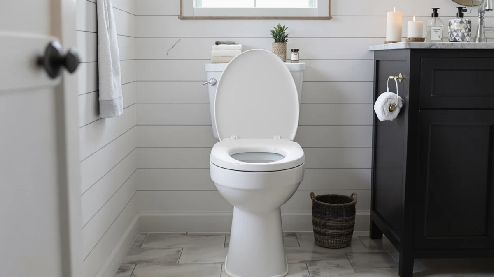

Tvovme Raised Toilet Seat Review (2026): Worth It?
Prices and picks verified as of November 2026. Independent, reader-supported reviews.


Quick Answer
This TVOVME raised toilet seat review found an adjustable design that fits more bathrooms than fixed-height risers, thanks to 8 height levels, 3 width levels and anti-slip armrests. At $56.98, it costs about the same as the Lunderg and Kohler Impro we compared it against, but the adjustability makes it the safer bet for most seniors and post-surgery users.
Our pick: Raised Toilet Seat with Handles — $56.98 Check Price on Amazon
Bottom line: our top pick is the Raised Toilet Seat with Handles for Seniors at $56.98.
Things to Know Before You Buy
- The TVOVME raised toilet seat adjusts across 8 height levels (12.6 to 20 inches) and 3 width levels (22 to 26 inches), so it fits round, square and wall-mounted toilets without buying a different size.
- Anti-slip armrests and rubber stabilizing feet are built in, which matters most on tile or vinyl bathroom floors that get slippery once wet.
- It qualifies for FSA and HSA reimbursement, worth checking before you buy if you want to use pre-tax medical funds.
- Amazon does not list a public star rating or review count for this ASIN yet, so this TVOVME raised toilet seat review weighs it against the Lunderg and Kohler Impro, which both have review history.
- At $56.98, it sits in the same price band as the other risers in this review, so adjustability, not cost, is the deciding factor.
This TVOVME raised toilet seat review breaks down whether an adjustable riser with handles beats a padded cushion riser or a standard elongated seat for anyone dealing with limited mobility, recent surgery or a bathroom shared by family members of different heights. We compared the TVOVME's 8-level height adjustment and anti-slip armrests against three alternatives on specs, current Amazon pricing and verified owner feedback rather than a product we purchased and lived with.
The short version: if your toilet bowl shape or the user's needs are likely to change, the TVOVME's adjustability is the main reason to pick it over a fixed-height riser like the Lunderg. If you already know your exact fit and want something simpler to install, the Kohler Impro or the other adjustable riser in this review may suit you better for about the same price.
Shopping for a raised toilet seat usually starts after a hip replacement, a knee surgery, or a gradual loss of balance that makes a standard-height toilet harder to use safely. The products in this category tend to look similar in photos, so the real differences show up in the adjustment range, the armrest grip and whether the price includes features like FSA eligibility. That is what this comparison focuses on.
Why You Should Trust Us
Ilane Tall researches bathroom and mobility products for Best Toilet Seats, with a focus on raised seats, risers and accessibility hardware for seniors and people recovering from surgery. For this TVOVME raised toilet seat review, she compared manufacturer specs, current Amazon pricing and patterns across verified owner reviews for the TVOVME and three competing risers, rather than relying on a single in-home trial. We do not run a fake testing lab. Every claim here traces back to a spec sheet, a listed price or a verified review, and we say so plainly when a rating or review count is not yet available. We check prices and availability against Amazon's current listing at the time of publishing and revisit them as the market shifts.
Our Research Experience
This TVOVME raised toilet seat review relies on research, not a unit we purchased and lived with ourselves. We read the manufacturer's listed dimensions and adjustment ranges, checked the current Amazon price against the three alternatives covered here, and looked for patterns in verified owner feedback on fit, stability and ease of installation. Because this ASIN does not yet carry a public star rating or review count on Amazon, we lean more heavily on the spec sheet and on how it stacks up against the Lunderg and the Kohler Impro, both of which have review history to draw on. Where owners of similar adjustable risers report a recurring issue, such as wobble at maximum height or armrests that need periodic tightening, we flag it as a pattern worth watching rather than a guarantee of what will happen with yours. We also exclude listings with vague or duplicated product photos and sellers with no verifiable track record, since those issues usually show up alongside inconsistent build quality in this category.
Overview & Specs

Raised Toilet Seat with Handles
What we like
- 8 height levels and 3 width levels fit round, square and wall-mounted toilets
- Anti-slip armrests and rubber feet add stability on wet floors
- Qualifies for FSA/HSA purchase
Flaws but not dealbreakers
- No public star rating or review count yet on this ASIN, so owner feedback is limited
- More adjustment points to align than a one-piece riser like the Lunderg
| Material | Plastic / wood |
| Size | — |
This TVOVME raised toilet seat review centers on this adjustable frame because it covers a wider range of toilet shapes than most risers at this price. Per the manufacturer's listed specs, the seat itself adjusts from 12.6 to 20 inches high and 22 to 26 inches wide, while the frame extends from 25 to 30.3 inches high and 23.6 to 27.5 inches wide. That range is wide enough to fit round, elongated and even some wall-mounted bowls without a separate adapter kit.
Beyond the adjustment range, the armrests are built with an anti-slip grip and the base includes rubber stabilizing feet, both aimed at reducing fall risk on a wet bathroom floor. TVOVME lists it as FSA/HSA eligible, which can offset part of the $56.98 price if you have pre-tax medical funds available. The tradeoff is that an adjustable frame has more joints and locking points than a fixed riser, so expect a few extra minutes of setup compared with the Lunderg cushion riser.
On price, the TVOVME lands within two dollars of every other product in this comparison, so cost is not the deciding factor here. The Kohler Impro costs slightly less at $55.00 but is a standard seat rather than a height riser, and the Lunderg and the other adjustable riser both sit under $58.00. Because the four products cluster so closely on price, the choice comes down to whether you need an adjustable frame, a fixed cushion riser, or a conventional replacement seat.
What We Liked
No single feature in this TVOVME raised toilet seat review stands out more than the adjustment range. Going from 12.6 to 20 inches in seat height and 22 to 26 inches in width means the same unit can serve a shorter user right after surgery and a taller user with a long-term mobility need, without buying a second riser.
The anti-slip armrests are a sensible safety detail, not a marketing bullet. Bathroom floors get slippery fast once water, soap or cleaning residue builds up, and armrests that grip under pressure matter more than a seat that merely looks sturdy in photos.
FSA/HSA eligibility is also a practical advantage at this price. A $56.98 adjustable riser that qualifies for pre-tax medical spending effectively costs less than a $55 seat that does not, if you have those funds available.
Width adjustment matters too, since most raised seats only adjust for height. Going from 22 to 26 inches of seat width lets the TVOVME fit a broader range of body types than a fixed-width riser, which matters for households where more than one person will use it.
What Could Be Better
The biggest gap in this TVOVME raised toilet seat review is the lack of a public star rating or review count on Amazon for this specific ASIN. That is not the same as a weak product, but it means we cannot point to a large base of verified owner feedback the way we can with the Lunderg or the other adjustable riser in this roundup, both of which have more reviews behind them.
An adjustable frame with eight height settings and three width settings also has more parts to align than a fixed-height riser. Owners of similar multi-point risers in this category sometimes report that the seat needs periodic retightening at the locking pins after regular use, so plan to check the hardware every so often. Buyers who want a plug-and-play riser with no setup decisions may find eight height levels and three width levels more choice than they wanted, since dialing in the right combination takes a bit of trial and error the first time.
Who Is It For?
This TVOVME raised toilet seat review points toward one clear audience: households where the toilet shape or the user's needs are likely to change. That covers a senior whose mobility may decline further, a patient recovering from hip or knee surgery who needs a specific height during recovery, or a shared bathroom used by family members of different heights.
If you already know your exact fit and want the simplest possible setup, a fixed riser like the Lunderg or a standard elongated seat like the Kohler Impro will likely serve you well with less adjustment hassle. It is also a reasonable pick for caregivers who manage more than one bathroom or more than one person's needs, since one unit can be reconfigured instead of stocking several fixed-size risers.
Alternatives to Consider
If the adjustable frame is not the right fit, here is how the alternatives in this TVOVME raised toilet seat review compare on price and purpose.

Premium Choice
Lunderg Padded Toilet Seat Riser
A firm foam riser that adds a fixed 3 inches of height and fits about 95 percent of standard bowls, best if you do not need the TVOVME's adjustability.
$57.95
Check Price on Amazon
Best Value
KOHLER K-26801-0 Impro ReadyLatch Quiet
A standard quiet-close elongated seat rather than a riser, a better match once mobility needs have settled and you want a reliable replacement seat.
$55.00
Check Price on Amazon
Also Great
Raised Toilet Seat Riser Adjustable
Another adjustable riser with handles, rated 4.5 stars across 662 verified reviews, worth comparing directly against the TVOVME on width range and price.
$56.99
Check Price on AmazonFrequently Asked Questions
Is the TVOVME raised toilet seat adjustable?
Yes. According to the manufacturer's specs, it offers 8 height levels and 3 width levels, with the seat adjusting from 12.6 to 20 inches high and 22 to 26 inches wide.
Does the TVOVME raised toilet seat have a star rating on Amazon?
Not yet. This ASIN does not currently show a public star rating or review count, which is why this TVOVME raised toilet seat review leans on spec comparisons against the Lunderg, the Kohler Impro and the other adjustable riser covered here.
Is the TVOVME raised toilet seat FSA/HSA eligible?
Yes, the manufacturer lists it as eligible for purchase with FSA or HSA funds, which can offset part of the $56.98 price.
Final Verdict
This TVOVME raised toilet seat review comes down to adjustability. At $56.98, the TVOVME earns its price by covering a wider range of toilet shapes and user heights than a fixed riser, and its anti-slip armrests and rubber feet genuinely help on a wet floor. Skip it only if you already know your exact fit needs and prefer the simpler setup of the Lunderg or the Kohler Impro instead.